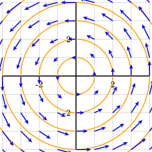

Section 3.7 Calculus components
There is a collection of graphical components to facilitate diagrams that could appear in a calculus or precalculus course.
Subsection 3.7.1 Graphs, derivatives, and tangent lines
To include the graph of a function, the function first needs to be defined inside a
<definition>. By default, the domain of the function is assumed to be the horizontal extend of the current bounding box. The @domain attribute can modify this, however.
<diagram dimensions="(300,300)" margins="5">
<definition>f(x)=x^3/8 - 1.5*x</definition>
<definition>g(s)=-sqrt(s+2)-1</definition>
<coordinates bbox="(-5,-5,5,5)">
<grid-axes decorations="no"/>
<graph function="f"/>
<graph function="g" domain="(-2,5)" stroke="green"/>
</coordinates>
</diagram>
By default, a graph is drawn by connecting
@N="100" short line segments. You may sometimes need to increase @N if the graph varies a lot.
As demonstrated in Figure 7.0.15, the
deriv function can be used to define the derivative of a function. For instance, fp(x) = deriv(f, x) defines fp to be the derivative.
Tangent lines are similar except a
@point attribute should be included to define the point at which the tangent line will appear. As with functions, the tangent line will be drawn across the length of the bounding box unless modified using the @domain attribute.
<diagram dimensions="(300,300)" margins="5">
<definition>f(x)=x^3/8 - 1.5*x</definition>
<coordinates bbox="(-5,-5,5,5)">
<grid-axes decorations="no"/>
<graph function="f"/>
<tangent-line function="f" point="-1.5"/>
<tangent-line function="f" point="1.5"
domain="(0,3)" stroke="green"/>
</coordinates>
</diagram>
A
<tangent-line> element can be given a @name attribute so that one might refer later to the linear function that defines the tangent line. For instance, if @name="L", then L defines the function
\begin{equation*}
L(x) = f(a)+f'(a)(x-a)\text{.}
\end{equation*}
Figure 3.7.5 demonstrates this feature by illustrating one step of Newton’s method.

<tangent-line>.Note the use of the
intersect function in the PreFigure source. In this case, intersect(L, -1) finds the solution of the equation \(L(x)=0\) using \(x_0=-1\) as a starting point.
<diagram dimensions="(300,300)" margins="5">
<definition>f(x)=7-(x+1)^2/2</definition>
<definition>x0 = 1</definition>
<coordinates bbox="(-8,-8,8,8)">
<grid-axes xlabel="x" ylabel="y"/>
<graph function="f"/>
<tangent-line function="f" point="x0" name="L"/>
<point p="(x0,f(x0))" alignment="se"/>
<definition>x1 = intersect(L,-1)</definition>
<repeat parameter="x in (x0, x1)">
<line endpoints="((x,0),(x,0))"
endpoint-offsets="((0,-3),(0,3))"
tactile-endpoint-offsets="((0,-18),(0,0))"
stroke="black"/>
</repeat>
<label anchor="(x0,0)" alignment="north">
<m>x_0</m>
</label>
<label anchor="(x1,0)" alignment="ne">
<m>x_1</m>
</label>
</coordinates>
</diagram>
It is possible to include arrows on the right and/or left ends of a
<graph> using either @arrows="1" or "2" though this practice is discouraged due to the visual clutter it can create.
Subsection 3.7.2 Parametric curves
The
<parametric-curve> tag includes the plot of a function defined parametrically.
<diagram dimensions="(300,300)" margins="5">
<definition>f(t)=3*(cos(t), sin(t)) + (cos(10*t),sin(10*t))</definition>
<definition>g(t)=(t^2,t^3)</definition>
<coordinates bbox="(-5,-5,5,5)">
<grid-axes decorations="no"/>
<parametric-curve function="f" domain="(0,2*pi)"
N="200" closed="yes"/>
<parametric-curve function="g" domain="(-2,2)"
stroke="red"/>
</coordinates>
</diagram>
Notice that a parametric curves needs a
@domain attribute and may be closed with @closed="yes". Some curves may require a larger value of @N for a smoother appearence.
Subsection 3.7.3 Implicit curves
The solutions to an equation \(f(x,y)=k\) can be plotted with the
<implicit-curve> and <contour> tags. These tags are functionally equivalent and are both provided since one may be more aligned with an author’s intent in a given context.
<diagram dimensions="(300, 300)" margins="5">
<definition>f(x,y) = y^2 - x^3 + x</definition>
<coordinates bbox="[-2,-2,2,2]">
<grid-axes />
<implicit-curve function="f" k="-1" stroke="orange" />
<implicit-curve function="f" k="1" stroke="orange" />
</coordinates>
</diagram>
Two required attributes are
@function and @k. The algorithm relies on breaking the current bounding box into smaller rectangles and looking for solutions to \(f(x,y)=k\) recursively. For some complicated functions, the algorithm may miss a component of the curve. In this case, set the attribute @initial-depth to a value higher than its default of 4. If two components are incorrectly joined, increase the depth to which the algorithm may recurse by raising @depth beyond its default of 8.
Subsection 3.7.4 Areas
The area under a curve and between curves are drawn with
<area-under-curve> and <area-between-curves>.
<diagram dimensions="(300, 300)" margins="5">
<definition>f(x)=2*sqrt(x)</definition>
<coordinates bbox="[-1,-1,5,5]">
<grid-axes />
<area-under-curve function="f" domain="(1,4)"
fill="lightgray" stroke="black"/>
<graph function="f" domain="(0,5)"/>
</coordinates>
</diagram>
<diagram dimensions="(300, 300)" margins="5">
<definition>f(x)=sqrt(x)</definition>
<definition>g(x)=-2*atan(x)</definition>
<coordinates bbox="[-1,-3,5,3]">
<grid-axes />
<area-between-curves function1="f" function2="g" domain="(1,3)"
fill="lightgray" stroke="black"/>
<graph function="f" domain="(0,5)"/>
<graph function="g" domain="(0,5)"/>
</coordinates>
</diagram>
As with the other graphs we have seen in this section, the value of
@N can be increased to produce smoother graphs, in some cases.
As demonstrated in Figure 3.7.13, there is another version of the
intersect function that can be helpful.

intersect function finds the intersection of two graphs.In this case, we use
intersect( (f,g), 1) to find the intersection point starting with \(x_0=1\text{.}\) Notice that the two functions are included inside parentheses.
<diagram dimensions="(300,300)" margins="5">
<definition>f(x)=sin(x)</definition>
<definition>g(x)=cos(x)</definition>
<definition>a=intersect((f,g),1)</definition>
<definition>b=intersect((f,g),4)</definition>
<coordinates bbox="(-1,-1.5,5,1.5)">
<grid-axes decorations="no"/>
<area-between-curves functions="(f,g)" domain="(a,b)" fill="lightgray"/>
<graph function="f"/>
<graph function="g"/>
<line endpoints="((a,0),(a,0))" endpoint-offsets="((0,-3),(0,3))"/>
<label anchor="(a,0)" alignment="south" offset="(0,-7)">
<m>a</m>
</label>
<line endpoints="((b,0),(b,0))" endpoint-offsets="((0,-3),(0,3))"/>
<label anchor="(b,0)" alignment="south" offset="(0,-4)">
<m>b</m>
</label>
</coordinates>
</diagram>
Subsection 3.7.5 Riemann sums
Finally, there is a
<riemann-sum> element.
<diagram dimensions="(300,300)" margins="5">
<definition>f(x) = 2*log(x+2)</definition>
<coordinates bbox="[-1,-1,5,5]">
<grid-axes/>
<riemann-sum function="f" domain="(1,4)" rule="right"
N="6" fill="lawngreen" stroke="black" width="1"/>
<graph function="f"/>
</coordinates>
</diagram>
Subsection 3.7.6 Vector fields and gradients
PreFigure can plot two-dimensional vector fields and gradients of two-variable functions as demonstrated in the next series of examples.

<diagram dimensions="(300,300)" margins="5">
<definition>f(x,y)=(-y,x)</definition>
<coordinates bbox="(-4,-4,4,4)">
<grid-axes/>
<repeat parameter="k=1..6">
<circle center="(0,0)" radius="k" stroke="orange"/>
</repeat>
<vector-field function="f"/>
</coordinates>
</diagram>
Notice that the vector field is defined by the value of the
@function attribute. The grid on which the vector field is drawn can be changed using the @spacings attribute similar to that of the grid element.
If the lengths of some of the vectors exceed the size of a cell in the grid, then all the vectors will be scaled by some appropriate factor. This behavior can be changed by setting the
@scale attribute so that the vector field plotted is \(sf(x,y)\) where \(s\) is the value of the @scale attribute.
The size and shape of arrows can be controlled using
@arrow-width and @arrow-angles as described in the section on arrows.
Illustrating vector fields can be challenging when there is considerable variation in the lengths of the vectors. For this reason, one may add an
@exponent="p" attribute to the <vector-field> element. This causes a vector \({\mathbf v}\) to be scaled so that its new length is \(\left|{\mathbf v}\right|^p\text{.}\) With a value of \(0\lt p \lt 1\text{,}\) the lengths will become more uniform, as demonstrated in Figure 3.7.19, which can help some features, such as critical points and circulation, to appear more easily.

@exponent="0.3".The gradient of a function can be defined using the
grad operator. For instance, del_f(x,y) = grad(f, (x,y)) defines a new function which is the gradient of f. Notice that the point (x,y) is enclosed in parentheses inside the grad operator.
<diagram dimensions="(300,300)" margins="5"
xmlns="https://prefigure.org">
<definition>f(x,y)=x^2+y^2</definition>
<definition>del_f(x,y) = grad(f, (x,y))</definition>
<coordinates bbox="(-4,-4,4,4)">
<grid-axes stroke="gray"/>
<repeat parameter="k=1..6">
<circle center="(0,0)" radius="k" stroke="orange"/>
</repeat>
<vector-field function="del_f" spacings="((-3,1,3),(-3,1,3))"/>
</coordinates>
</diagram>
Alternatively, one can plot a vector field along a curve by modifying the attributes of the
<vector-field> element. If a function \({\mathbf r}(t)=(x(t),y(t))\) is defined, then we can include the attributes @curve="r", @domain="(a,b)", and @N="n" to plot the vector field \(n\) times across the domain \((a,b)\text{.}\)
<diagram dimensions="(300,300)" margins="5"
xmlns="https://prefigure.org">
<definition>F(x,y)=(y,x)</definition>
<definition>r1(t)=(3*cos(t),3*sin(t))</definition>
<coordinates bbox="(-4,-4,4,4)">
<grid-axes decorations="no"/>
<parametric-curve function="r1" domain="(0,2*pi)" stroke="magenta"/>
<vector-field function="F" curve="r1"
domain="(0,2*pi)" N="13"
scale="0.4"/>
</coordinates>
</diagram>

<spline>.<diagram dimensions="(300,300)" margins="5"
xmlns="https://prefigure.org">
<definition>g(x,y)=x*y</definition>
<definition>del_g(x,y)=grad(g, (x,y))</definition>
<coordinates bbox="(-1,-1,4,4)">
<grid-axes decorations="no" spacings="((-1,1,4),(-1,1,4))"/>
<spline points="((-0.5,3),(1,3),(2,2.5),(3,1.5),(2,0))"
name="s" stroke="magenta" thickness="2"/>
<definition>ds(t)=deriv(s,t)</definition>
<definition>T(t)=1/length(ds(t))*ds(t)</definition>
<vector-field function="T" curve="s"
domain="(0,4)" N="5"/>
<vector-field function="del_g" curve="s"
domain="(0,4)" N="5" scale="0.2"/>
<definition>p=s(3)</definition>
<definition>g=0.2*del_g(*p)</definition>
<label anchor="p+T(3)" alignment="se">
<m>{\mathbf T}</m>
</label>
<label anchor="p+g" alignment="n">
<m>\nabla f</m>
</label>
<angle-marker points="(p+T(3),p,p+g)">
<m>\theta</m>
</angle-marker>
</coordinates>
</diagram>
Note the use of the
* operator as described in Subsection 5.4.1. Alternatively, one could have written g=del_g(p[0],p[1]).
Subsection 3.7.7 Polar coordinates
There are a few components that we have already met and that can be adapted for use in polar coordinates. These include
-
<grid> -
<grid-axes> -
<graph> -
<area-under-curve> -
<area-between-curves>
Figure 3.7.26 demonstrates some examples of polar grids. The grid on the left is formed simply by adding
@coordinates="polar" to the <grid-axes> element. In this case, the spacings of the grid lines are automatically determined. The radial spacing is determined by the size of the bounding box while the angular spacing gives a separation of \(30^\circ\) in the grid lines drawn radially.
@coordinates="polar" to either a <grid> or <grid-axes> elements.The diagram on the right of Figure 3.7.26 shows two polar grids with the spacings of the grid lines specified in the source, which is given in Listing 3.7.27. Notice that the
@spacings attribute is used with the first triplet describing the radial spacing and the second triplet describing the angular spacing. By default, the angular spacing is expected to be expressed in radians, but this can be modified with @spacing-degrees="yes".
<diagram dimensions="(300,300)" margins="5">
<coordinates bbox="(-5,-5,5,5)">
<grid coordinates="polar"
spacings="((0,0.5,5),(0,15,360))"
spacing-degrees="yes" stroke="lightgray"/>
<grid coordinates="polar"
spacings="((0,1,5),(0,30,360))"
spacing-degrees="yes" stroke="gray"/>
</coordinates>
</diagram>
Graphs of polar functions can be added to a diagram using a
<graph> element with the attribute @coordinates="polar", as illustrated in Figure 3.7.28 and its PreFigure source in Listing 3.7.29.
By default, the domain of a polar graph is \([0,2\pi]\text{,}\) but another domain can be specified using the
@domain and @domain-degrees attributes. Polar graphs can also be closed with @closed="yes" and filled.
<diagram dimensions="(300,300)" margins="5">
<definition>f(t)=4*sin(3*t)</definition>
<definition>g(t)=0.5*e^(0.3*t)</definition>
<coordinates bbox="(-5,-5,5,5)">
<grid-axes coordinates="polar"
clear-background="yes"/>
<graph function="f" coordinates="polar" closed="yes"
fill="cornflowerblue"/>
<graph function="g" coordinates="polar" arrows="1"
domain="(-360,360)" domain-degrees="yes"
stroke="red" thickness="4"/>
</coordinates>
</diagram>
Polar areas can also be included using
@area-under-curve and @area-between-curves by adding the @coordinates="polar" attribute. This is illustrated in Figure 3.7.30

<diagram dimensions="(300,300)" margins="5">
<definition>f(t)=4*cos(2*t)</definition>
<definition>g(t)=2+cos(3*t)</definition>
<coordinates bbox="(-5,-5,5,5)">
<grid-axes coordinates="polar"
clear-background="yes"/>
<graph function="g" coordinates="polar" stroke="gray"
domain="(90,270)" domain-degrees="yes"/>
<area-under-curve function="f" coordinates="polar"
domain="(-30,30)" domain-degrees="yes"
fill="cornflowerblue" stroke="blue"/>
<area-between-curves functions="(f,g)" coordinates="polar"
domain="(150,210)" domain-degrees="yes"
fill="orange" stroke="red"/>
</coordinates>
</diagram>